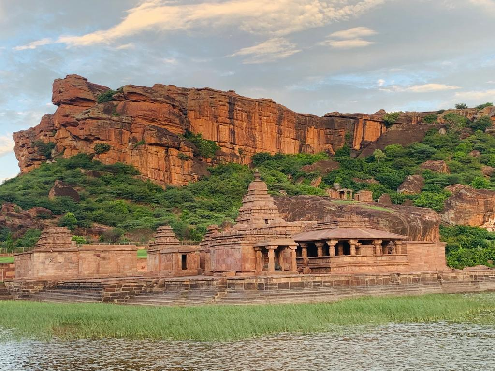
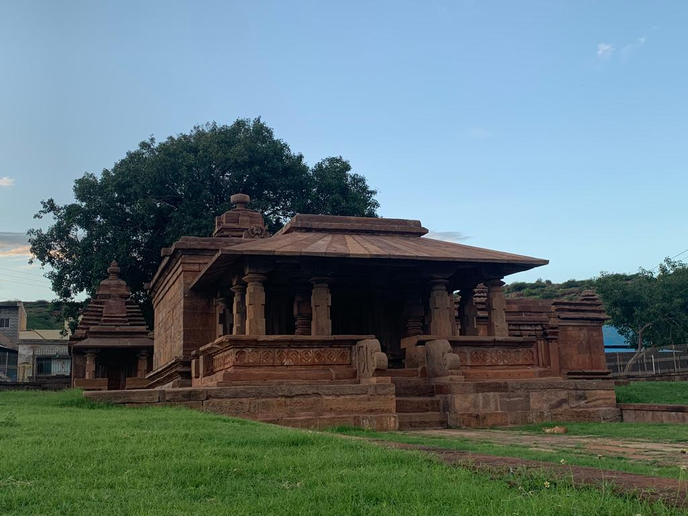
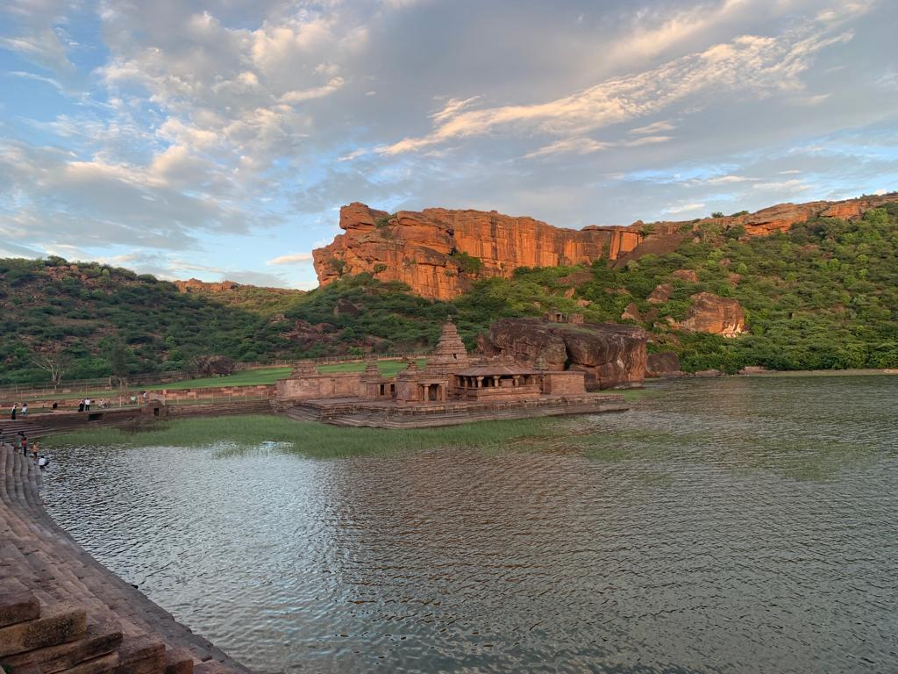

|

BHUTANATHA GROUP OF TEMPLE home Address: WMCQ+837, Badami,Karnataka 587201 phone Phone Number: +91-7406519017 schedule Timing: 09:00am - 06:00pm Location |
HISTORYBHUTANTHA MAIN GROUPThe Bhutanatha main group (700–725 CE) is the older set of Hindu shrines to the east of the Agastya Teertha. It has a gudha-mandapa with four massive central pillars. This mandapa connects to a smaller square-plan sanctum with a Shivalinga. On the top of the sanctum is the Dravida-style tritala superstructure (three storeys). The lower part consists of a padabandha and kumbha. The vimana walls has karnas with Brahmakanta-style pilasters. The wall's nasis depict heads of kinnaras and gandharvas. The image niches on the wall of the shrine and the hall are now empty though some decorative elements like makharas (mythical beast) with long tails still remain. The mandapa has jali . On either side of the foot of the shrine doorway is an image of goddess Ganga on her vehicle, the makara, on the right, and on the left, that of goddesses Yamuna riding the tortoise. There is no dedicatory block upon the lintel. Other artwork found nearby include Ganesha and Mahisasuramardini. This inscription can be dated to about the late 9th-century. This suggests the main temple was in active use at the time. MALLIKARJUNA GROUPThe Mallikarjuna group is close to the main Bhutanatha group, but located on the north back of the manmade lake. It consists of several temples. These open to the south and are marked by their notable pyramidal superstructure in the 11th to 12th-century phamsana Nagara style. The largest temple likely was a Vishnu temple, saw a period when these ruined temples were in disuse, and was re-consecrated with Shiva linga while preserving the remains of its historic artwork. These temples present the construction ideas explored by the Kalyani Chalukya architects. The largest temple has an open rectangular mandapa with eight pillars, that connects to an inner mandapa, antarala and garbhagriya – all on a square plan. All temples in this group have simpler walls, angled eaves over the open mantapa (hall). The artwork found in this group includes both Vishnu and Shiva.  |